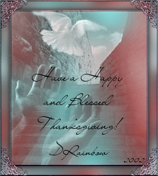
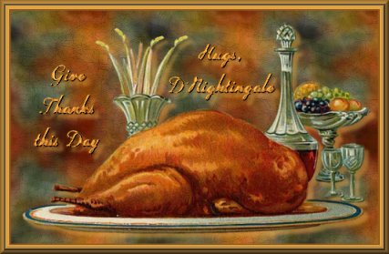
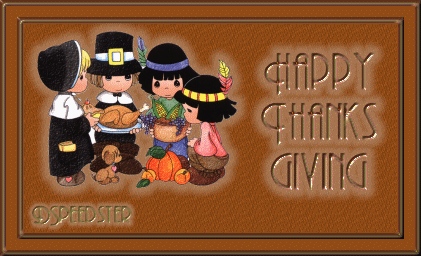
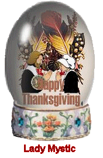
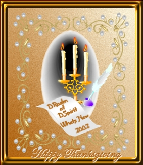
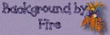

|
It's that time of year again...time to give thanks
for all we have received and will receive.
DRabbitha is at it all ready!! =) I've been turned into a
turkey!
Ahhhhh-haaaa...FREEDOM!!






|